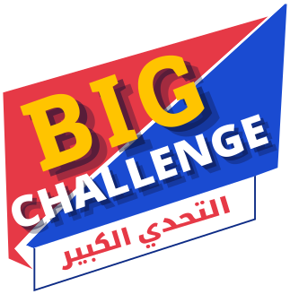
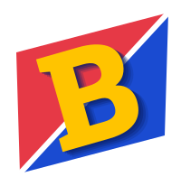

الفريق الأول
اختبار العرض
0:10
نافذة الجمهور · بانتظار المقدّم
من
المباراة تبدأ بعد قليل
اكتب اسمَي الفريقين في لوحتيهما، ثم اختر عدد الأنماط
من يختار نمط الجولة الأولى؟
الفائز بالقرعة
يختار نمط الجولة الأولى
النتيجة النهائية
الفائز بالمباراة
الفريق الثاني
يبدأ الإجابة
الإجابة: